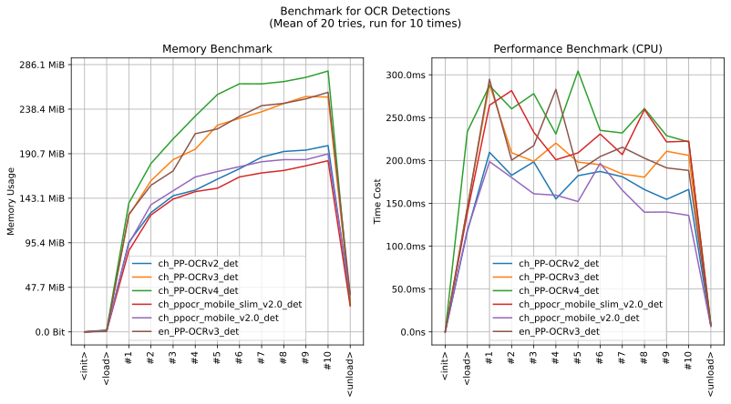

imgutils.ocr
- Overview:
Detect and recognize text in images.
The models are exported from PaddleOCR, hosted on huggingface - deepghs/paddleocr.

This is an overall benchmark of all the text detection models:
and an overall benchmark of all the available text recognition models:

detect_text_with_ocr
- imgutils.ocr.detect_text_with_ocr(image: str | PathLike | bytes | bytearray | BinaryIO | Image, model: str = 'ch_PP-OCRv4_det', heat_threshold: float = 0.3, box_threshold: float = 0.7, max_candidates: int = 1000, unclip_ratio: float = 2.0) List[Tuple[Tuple[int, int, int, int], str, float]][source]
Detect text in an image using an OCR model.
- Parameters:
image (ImageTyping) – The input image.
model (str, optional) – The name of the text detection model.
heat_threshold (float, optional) – The heat map threshold for text detection.
box_threshold (float, optional) – The box threshold for text detection.
max_candidates (int, optional) – The maximum number of candidates to consider.
unclip_ratio (float, optional) – The unclip ratio for text detection.
- Returns:
A list of detected text boxes, label (always
text), and their confidence scores.- Return type:
List[Tuple[Tuple[int, int, int, int], str, float]]
- Examples::
>>> from imgutils.ocr import detect_text_with_ocr >>> >>> detect_text_with_ocr('comic.jpg') [((742, 485, 809, 511), 'text', 0.9543377610144915), ((682, 98, 734, 124), 'text', 0.9309689495575223), ((716, 136, 836, 164), 'text', 0.9042856988923695), ((144, 455, 196, 485), 'text', 0.874083638387722), ((719, 455, 835, 488), 'text', 0.8628696346175078), ((124, 478, 214, 508), 'text', 0.848871771901487), ((1030, 557, 1184, 578), 'text', 0.8352495440618789), ((427, 129, 553, 154), 'text', 0.8249209443996619)]
Note
If you need to extract the actual text content, use the
ocr()function.
ocr
- imgutils.ocr.ocr(image: str | PathLike | bytes | bytearray | BinaryIO | Image, detect_model: str = 'ch_PP-OCRv4_det', recognize_model: str = 'ch_PP-OCRv4_rec', heat_threshold: float = 0.3, box_threshold: float = 0.7, max_candidates: int = 1000, unclip_ratio: float = 2.0, rotation_threshold: float = 1.5, is_remove_duplicate: bool = False)[source]
Perform optical character recognition (OCR) on an image.
- Parameters:
image (ImageTyping) – The input image.
detect_model (str, optional) – The name of the text detection model.
recognize_model (str, optional) – The name of the text recognition model.
heat_threshold (float, optional) – The heat map threshold for text detection.
box_threshold (float, optional) – The box threshold for text detection.
max_candidates (int, optional) – The maximum number of candidates to consider.
unclip_ratio (float, optional) – The unclip ratio for text detection.
rotation_threshold (float, optional) – The rotation threshold for text detection.
is_remove_duplicate (bool, optional) – Whether to remove duplicate text content.
- Returns:
A list of detected text boxes, their corresponding text content, and their combined confidence scores.
- Return type:
List[Tuple[Tuple[int, int, int, int], str, float]]
- Examples::
>>> from imgutils.ocr import ocr >>> >>> ocr('comic.jpg') [((742, 485, 809, 511), 'MOB.', 0.9356705927336156), ((716, 136, 836, 164), 'SHISHOU,', 0.8933000384412466), ((682, 98, 734, 124), 'BUT', 0.8730931912907247), ((144, 455, 196, 485), 'OH,', 0.8417627579351514), ((427, 129, 553, 154), 'A MIRROR.', 0.7366019454049503), ((1030, 557, 1184, 578), '(EL) GATO IBERICO', 0.7271127306351021), ((719, 455, 835, 488), "THAt'S △", 0.701928390168364), ((124, 478, 214, 508), 'LOOK!', 0.6965972578194936)]
By default, the text recognition model used is ch_PP-OCRv4_rec. This recognition model has good recognition capabilities for both Chinese and English. For unsupported text types, its recognition accuracy cannot be guaranteed, resulting in a lower score. If you need recognition for other languages, please use :func:`list_rec_models` to view more available recognition models and choose the appropriate one for recognition.
>>> from imgutils.ocr import ocr >>> >>> # use default recognition model on japanese post >>> ocr('post_text.jpg') [ ((319, 847, 561, 899), 'KanColle', 0.9130667787597329), ((552, 811, 791, 921), '1944', 0.8566762346615406), ((319, 820, 558, 850), 'Fleet Girls Collection', 0.8100635458911772), ((235, 904, 855, 1009), '海', 0.6716076803280185), ((239, 768, 858, 808), 'I · tSu · ka · A· NO· u· mI · de', 0.654507230718228), ((209, 507, 899, 811), '[', 0.2888084133529467) ] >>> >>> # use japanese model >>> ocr('post_text.jpg', recognize_model='japan_PP-OCRv3_rec') [ ((319, 847, 561, 899), 'KanColle', 0.9230690942939336), ((552, 811, 791, 921), '1944', 0.8564870717047623), ((235, 904, 855, 1009), 'いつかあの海で', 0.8061289060358996), ((319, 820, 558, 850), 'Fleet Girls Collection', 0.8045396777081609), ((239, 768, 858, 808), 'I.TSU.KA・A・NO.U・MI.DE', 0.7311649382696896), ((209, 507, 899, 811), '「艦とれれ', 0.6648729016512889) ]
list_det_models
- imgutils.ocr.list_det_models() List[str][source]
List available text detection models for OCR.
- Returns:
A list of available text detection model names.
- Return type:
List[str]
- Examples::
>>> from imgutils.ocr import list_det_models >>> >>> list_det_models() ['ch_PP-OCRv2_det', 'ch_PP-OCRv3_det', 'ch_PP-OCRv4_det', 'ch_PP-OCRv4_server_det', 'ch_ppocr_mobile_slim_v2.0_det', 'ch_ppocr_mobile_v2.0_det', 'ch_ppocr_server_v2.0_det', 'en_PP-OCRv3_det']
list_rec_models
- imgutils.ocr.list_rec_models() List[str][source]
List available text recognition models for OCR.
- Returns:
A list of available text recognition model names.
- Return type:
List[str]
- Examples::
>>> from imgutils.ocr import list_rec_models >>> >>> list_rec_models() ['arabic_PP-OCRv3_rec', 'ch_PP-OCRv2_rec', 'ch_PP-OCRv3_rec', 'ch_PP-OCRv4_rec', 'ch_PP-OCRv4_server_rec', 'ch_ppocr_mobile_v2.0_rec', 'ch_ppocr_server_v2.0_rec', 'chinese_cht_PP-OCRv3_rec', 'cyrillic_PP-OCRv3_rec', 'devanagari_PP-OCRv3_rec', 'en_PP-OCRv3_rec', 'en_PP-OCRv4_rec', 'en_number_mobile_v2.0_rec', 'japan_PP-OCRv3_rec', 'ka_PP-OCRv3_rec', 'korean_PP-OCRv3_rec', 'latin_PP-OCRv3_rec', 'ta_PP-OCRv3_rec', 'te_PP-OCRv3_rec']